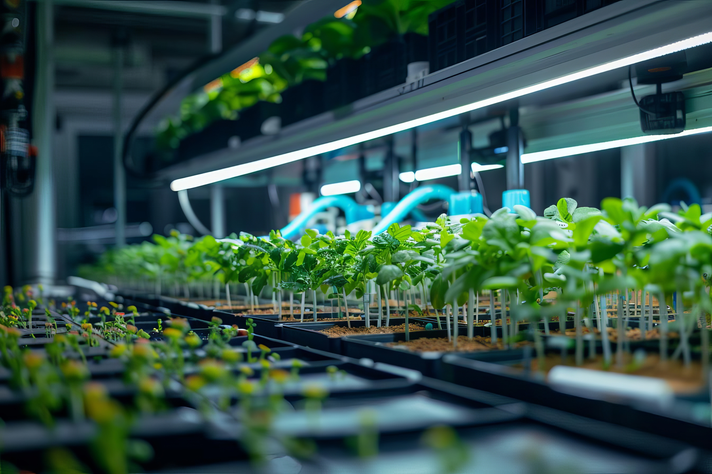

Introduction to Life on Land
Sustainable Development Goal 15 aims to protect, restore, and promote the sustainable use of terrestrial ecosystems, manage forests sustainably, combat desertification, and halt and reverse land degradation and halt biodiversity loss. However, several challenges and threats hinder progress towards achieving this goal:
Overview of Life on land
Sustainable Development Goal 15 (Life on land) is one of the 17 Sustainable Development Goals established by the United Nations in 2015. Titled "Life on Land," this goal focuses on protecting, restoring, and promoting sustainable use of terrestrial ecosystems.
Environmental researchers play a crucial role in monitoring and understanding terrestrial ecosystems, contributing to the development of sustainable management strategies.
Importance of Life on Land
Terrestrial ecosystems are vital for all life on Earth. They provide essential services such as clean air, water purification, climate regulation, and resources for human survival and economic development. Protecting these ecosystems is crucial for maintaining biodiversity and ensuring a sustainable future for all species, including humans.

Reforestation efforts, like planting new trees, are essential for restoring degraded lands and enhancing biodiversity.
Key Objectives of Life on land
Life on land encompasses several key objectives aimed at preserving and sustainably managing life on land:
- Protect and restore terrestrial ecosystems
- Promote sustainable forest management
- Combat desertification
- Halt and reverse land degradation
- Stop biodiversity loss

Innovative technologies, such as indoor farming, can support sustainable food production while reducing pressure on natural ecosystems.